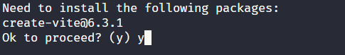
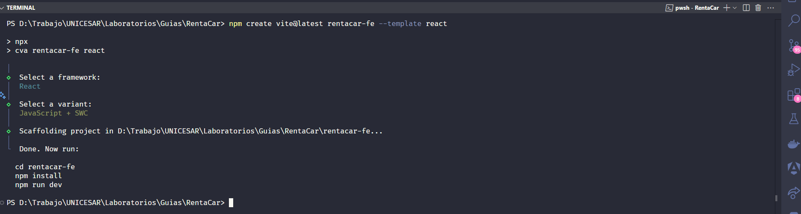
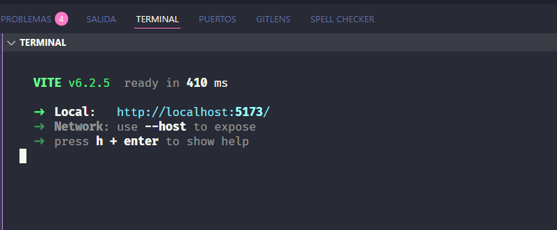
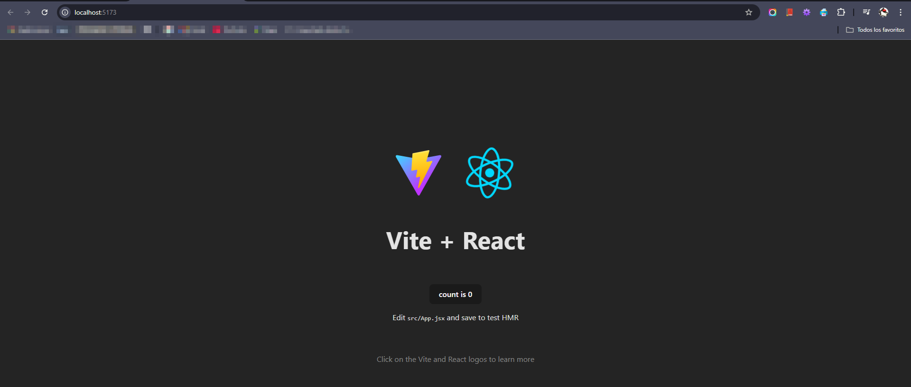
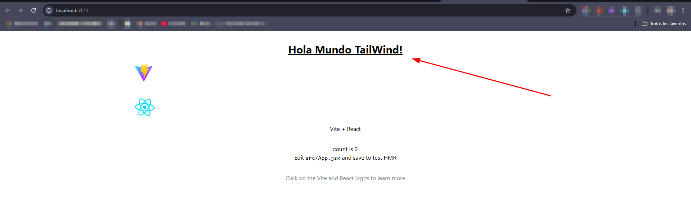

Crear el componente de Frontend para el proyecto de RentaCar
¿Qué vamos a construir?
Una pequeña app frontend donde puedas:
- Ver una lista de autos disponibles
- Ver detalles de un auto
- Filtrar autos por tipo o precio
Configurar el proyecto con Vite (más rápido que Create React App)
Instalar Vite y crear el proyecto
Se utiliza Vite para gestionar el proyecto
npm create vite@latest rentacar-fe --template react
cd renta-autos
npm install


Ejecuta el proyecto local
npm run dev

Abre el navegador y ve a [http://localhost:5173].
Debe verse algo como esto (Varía según la versión de React.)

Instalar TailWind CSS para el proyecto React
Tailwind CSS es un framework de CSS de código abierto. para el diseño de páginas web. La principal característica de esta biblioteca es que, a diferencia de otras como Bootstrap, no genera una serie de clases predefinidas para elementos como botones o tablas. En su lugar, crea una lista de clases CSS "de utilidad" que se pueden usar para dar estilos individuales a cada elemento.
Por ejemplo, mientras que en otros sistemas tradicionales existiría una clase warning-message que aplicaría un color de fondo amarillo y un texto en negrita, para conseguir este resultado en Tailwind hay que aplicar un conjunto de clases creadas por la biblioteca: bg-yellow-200 y font-bold (que traducido al español significa fondo-amarillo-200 y fuente-negrita).
Instalación y configuración de Tailwind CSS
la instalación de Tailwind, la podemos iniciar desde la página oficial, usando la configuración de React, que es con la que hicimos nuestro proyecto: [https://tailwindcss.com/docs/installation/framework-guides/react-router]
Primero, se instala tailwindcss and @tailwindcss/vite por medio de npm:
npm install tailwindcss @tailwindcss/vite
Agregar el plugin @tailwindcss/vite a la configuración de Vite (archivo vite.config.js):
import { defineConfig } from 'vite'
import tailwindcss from '@tailwindcss/vite'
export default defineConfig({
plugins: [
tailwindcss(),
],
})
Agregar la siguiente línea al archivo global de CSS del proyecto (src/App.css):
@import "tailwindcss";
Probamos la instalación y configuración, abrimos un componente de React y agreguemos la siguiente línea:
<h1 className="text-3xl font-bold underline">
Hello world!
</h1>
Ejecutamos la aplicación:
npm run dev
Y Listo:
